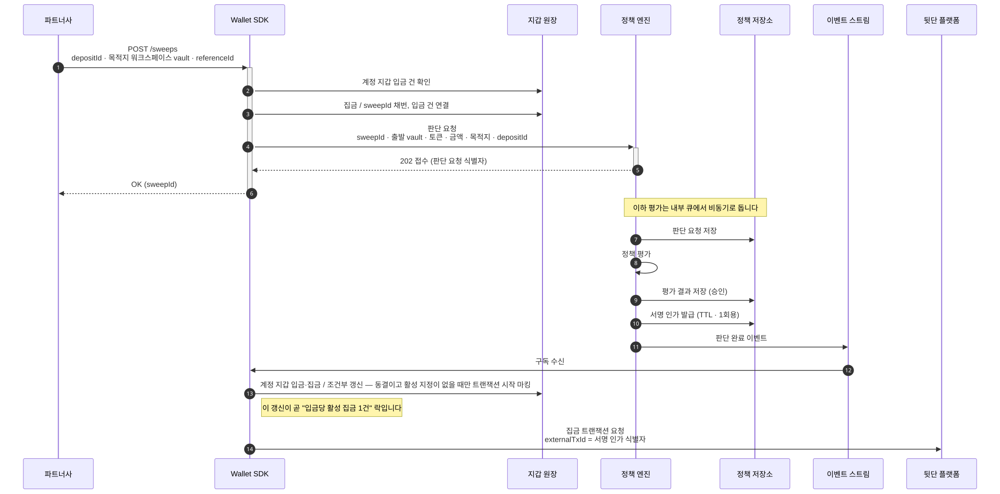
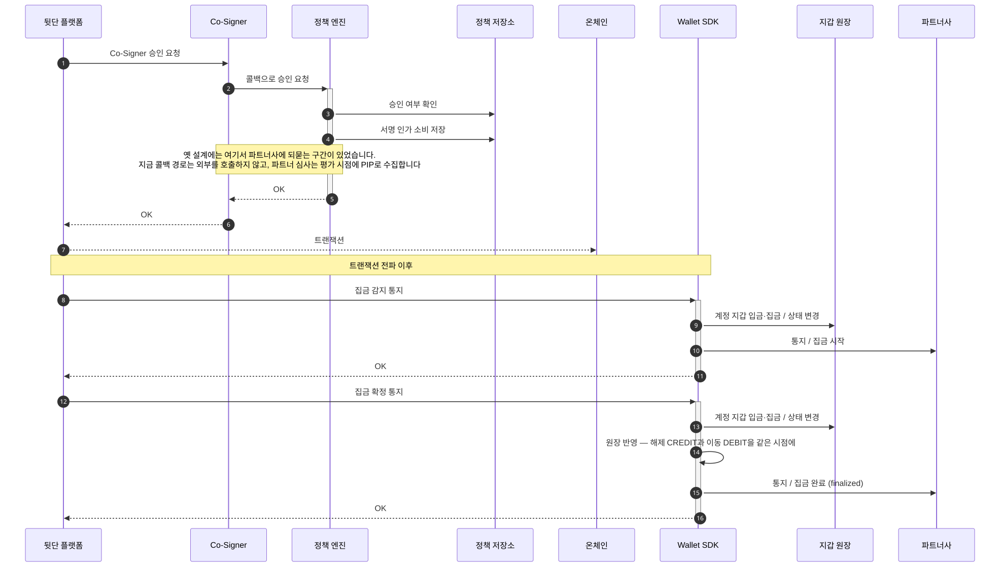

집금 (Sweep)
집금은 계정 지갑에 흩어진 자금을 워크스페이스 vault로 모으는 이동입니다. 이 페이지는 요청 접수와 정책 판단, 서명 직전 대조, 원장 반영까지를 순서대로 설명합니다. 요청은 입금 건 하나를 지목하고, 옮길 금액은 그 건이 정합니다.
요청은 접수만 되고 판단은 뒤따릅니다
다이어그램의 배역은 일곱입니다.
- 파트너사: Wallet SDK를 도입한 회사, 곧 Workspace 하나입니다
- Wallet SDK: 파트너 대상 API를 받아 정책 엔진에 판단을 묻고 서명 인프라에 제출하는 서버 컴포넌트입니다
- 지갑 원장: 지갑·입금·집금 기록을 담는 Wallet SDK 쪽 저장소입니다
- 정책 엔진: 자금을 움직이는 요청이 서명 인프라로 가기 전에 그 요청을 심사하는 별도 시스템입니다
- 정책 저장소: 판단 요청과 평가 결과, 서명 인가를 담는 정책 엔진 쪽 저장소입니다
- 이벤트 스트림: 판단 완료 이벤트를 구독자에게 나르는 경로입니다
- 뒷단 플랫폼: 지갑과 키를 보관하고 트랜잭션을 제출하는 외부 플랫폼입니다

요청에 함께 넣는 referenceId는 재시도 복구의 유일한 키입니다. 응답을 받지 못한 요청을 같은
값으로 다시 보내면 이미 만들어진 집금을 되찾습니다.
서명 인가는 승인된 판단 요청이 발급하는 한 번만 쓸 수 있는 서명 근거입니다. 옛 설계는 판단 요청에 그 인가를 동기로 돌려줬습니다. 지금은 202로 접수만 하고 결과를 이벤트로 냅니다. 그 2단계 규율은 서명 게이트에서 정합니다.
서명 직전에 다시 대조합니다
앞 다이어그램에 없던 배역은 둘입니다.
- Co-Signer: 서명 인프라 쪽에서 서명 직전에 정책 엔진 콜백으로 승인을 묻는 구성 요소입니다
- 온체인: 블록체인 네트워크입니다

콜백 경로가 밖으로 나가지 않는 이유는 시간입니다. 응답이 늦으면 뒷단 플랫폼이 재시도하지 않고 서명 요청을 취소합니다. 자세한 규율은 서명 게이트에 있습니다.
해제와 이동이 원자적입니다
집금을 요청하면 그 입금 건의 상태가 동결에서 출금 완료로 직행합니다. RELEASED를 거치지
않습니다.
해제와 송금을 순차로 하면 그 사이에 시간차가 생깁니다. 해제로 늘어난 금액을 그 창에서 다른 요청이 소진하면, 원래 옮기려던 건이 옮겨지지 않습니다.
지정은 조회가 아니라 조건부 갱신입니다
“그 입금이 동결이고 활성 지정이 없다”를 갱신 조건에 담고, 영향받은 행이 1건일 때만 통과시킵니다.
선조회 후 검사로 구현하면 동시 요청 둘이 모두 “지정 없음”을 관측해 같은 건을 이중 소진합니다. 입금 1건은 활성 이동 1건에만 지정됩니다.
인가는 서명 인가 하나뿐입니다
파트너사가 요청한 집금에는 정족수가 붙지 않습니다. 정족수는 승인에 필요한 최소 인원입니다.
그 요청이 만든 이동의 서명 인가 하나만 통과하면 됩니다.
정책은 지정한 건의 동결 상태와 확인 근거 유무, 해제 금액을 보고 판단합니다.
목적지 vault의 용도 태그는 아직 그 입력에 들어오지 않습니다. 태그를 판단 입력으로 읽는 경로가 신설로 정해졌습니다. 상세는 평가 시점에 사실을 읽어 오는 수집 경로인 PIP에 있습니다.
비활성 계정에서도 집금은 동작합니다
계정이 비활성이어도 집금은 허용합니다. 원장 반영 같은 오케스트레이션을 파트너사가 처리할 수 있기 때문입니다. 출금과 갈리는 지점입니다.
집금이 실패하면 지정했던 입금 건이 동결로 돌아옵니다
집금이 실패로 종결되면 지정했던 입금 건은 다시 FROZEN이 됩니다. 그래서 같은 건을 다시 집금할 수
있습니다.
되돌리는 지점은 실패 종결 한 곳입니다. 요청 흐름에서 거절된 경우와 실패 통지를 받은 경우, 대사가 실패로 판정한 경우가 모두 그 경로를 거칩니다. 되돌린 사실은 감사 기록으로 남습니다.
다음으로
집금은 시작·완료·실패를 각각 통지합니다 — SWEEP_INITIATED·SWEEP_FINALIZED·SWEEP_FAILED.
통지 본문과 중복 제거 규칙은 웹훅에 있습니다.
집금이 겸하는 해제가 왜 자동으로 일어나지 않는지는 자금 동결에 있습니다.